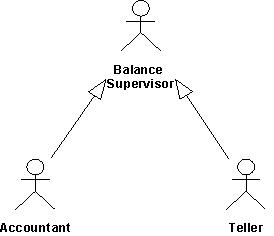

|
Несколько субъектов могут играть одну и ту же роль в конкретном варианте использования. Например, банкомат и бухгалтер,
проверяющие баланс финансового счета, рассматриваются вариантом использования, выполняющим проверку, как одна и та же
внешняя сущность. Общая роль моделируется как субъект Супервизор баланса, наследуемый двумя исходными субъектами. Эта
взаимосвязь показана с обобщениями субъектов.

Субъекты Банкомат и Бухгалтер наследуют все свойства Супервизора баланса. Таким образом, оба эти субъекта могут
действовать как Супервизор баланса.
Пользователь может играть несколько ролей по отношению к системе, что означает, что пользователь может соответствовать
нескольким субъектам. Для упрощения модели вы можете представить пользователя одним субъектом, наследующим несколько
субъектов. Каждый наследуемый субъект представляет одну из ролей пользователя по отношению к системе.
|